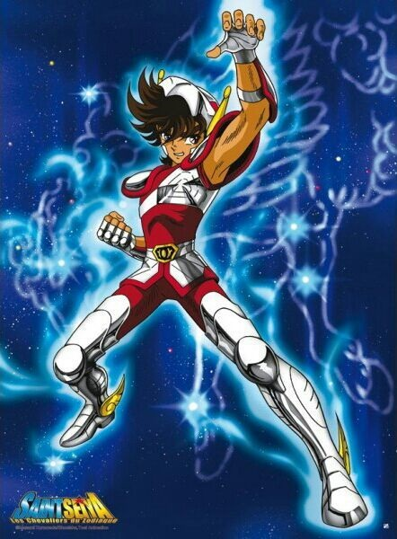
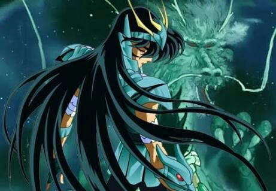
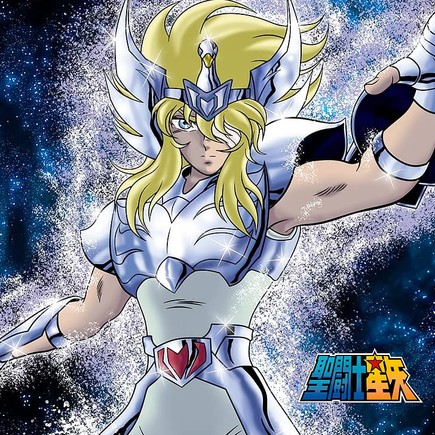
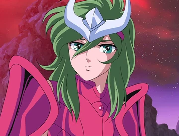

Seiya de Pegaso

Es un joven valiente y decidido que porta la armadura de bronce de Pegaso, una de las más poderosas entre los caballeros de Atenea. Seiya es conocido por su determinación, lealtad y valentía inquebrantable en la defensa de la diosa Atenea y la justicia. Su fuerza interior y su habilidad para enfrentar desafíos imposibles lo convierten en un líder nato, luchando contra enemigos poderosos para proteger a los débiles y salvar al mundo. Su cosmos, o energía vital, es una parte fundamental de su fuerza en combate, permitiéndole desbloquear el Séptimo Sentido para enfrentar las batallas más difíciles.
Shiryu de Dragon

Es conocido por su temple sereno y su fuerte sentido del honor. Shiryu porta la armadura de Dragón y es reconocido por su gran fuerza y resistencia. Es un guerrero compasivo y valiente que se esfuerza por proteger a sus amigos y luchar por la justicia. Su técnica principal es el "Dragón Naciente", que canaliza el poder del Dragón. Shiryu es un maestro en el uso del "Cólera del Dragón", una técnica defensiva y ofensiva que puede ser letal cuando se emplea con determinación. Además, su espíritu indomable y su lealtad a Atenea lo convierten en un aliado valioso y poderoso dentro del grupo de los Caballeros de Bronce.
Hyoga de Cisne

Es un guerrero tranquilo y reservado con un gran dominio sobre el hielo. Hyoga porta la armadura de Cisne y es conocido por su habilidad para manipular bajas temperaturas y crear ataques de hielo letales. Es un maestro en la técnica "Polvo de Diamantes", que congela a sus oponentes instantáneamente. A lo largo de la serie, Hyoga muestra una dedicación feroz para proteger a sus seres queridos y defender la justicia. A pesar de su apariencia calmada, al enfrentarse a desafíos, su determinación se vuelve inquebrantable. Hyoga demuestra valentía y lealtad a Atenea, convirtiéndose en un activo fundamental para el equipo de los Caballeros de Bronce en su lucha contra el mal.
Shun de Andromeda

A diferencia de la mayoría de los guerreros, Shun destaca por su naturaleza compasiva y pacifista. Porta la armadura de Andrómeda y es conocido por su gran bondad, sensibilidad y empatía hacia los demás. A pesar de su personalidad amable, Shun es un combatiente formidable, con habilidades excepcionales en el combate cuerpo a cuerpo y en el uso de su cadena Nebulosa, que puede atacar o defender de manera versátil.
Ikki de Fenix

A pesar de su inicial apariencia fría y distante, Ikki es un guerrero valiente y leal. Porta la armadura de Fénix y es conocido por su gran fuerza, astucia y habilidades en combate. Su poderoso cosmos le permite renacer de las cenizas como el Fénix, lo que lo convierte en un oponente increíblemente poderoso y resistente.
Ikki tiene un trasfondo complejo, habiendo pasado por adversidades y desafíos difíciles en su vida. A pesar de esto, su lealtad hacia su hermano menor, Shun de Andrómeda, es inquebrantable. A lo largo de la serie, su camino se desenvuelve mostrando su lado protector y su dedicación para con los ideales de justicia y protección. Ikki demuestra un profundo sentido de responsabilidad al luchar por los débiles y defender a Atenea, ganándose el respeto y la admiración de sus compañeros Caballeros de Bronce.